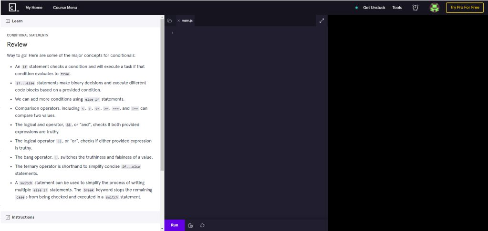

Learning JavaScript
Overview:
In this course we went over how to used JavaScript and it’s applications through Codecademy. On Codecademy we learned output types, how to use variables and how to create and use functions.
Coursework example:
Most of the codecademy looks similar to the picture above. Instructions were given in the white box, The purple box contained code that the user could write or edit and the black box shows the output.
Course Reflection:
I had already had a bit of practice with JavaScript so it was nice to get some extra practice and learn more about the language. I enjoyed reviewing the process of creating functions as it’s done slightly differently than regular code and It was nice to practice that.